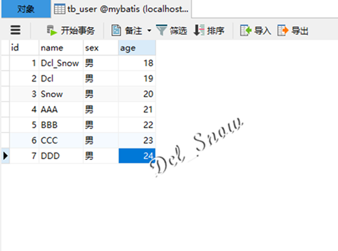
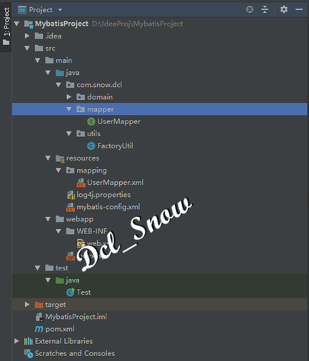
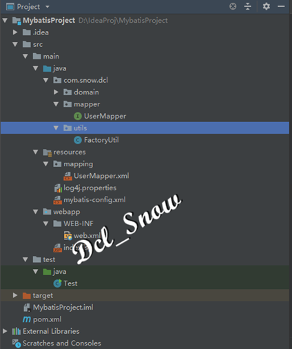
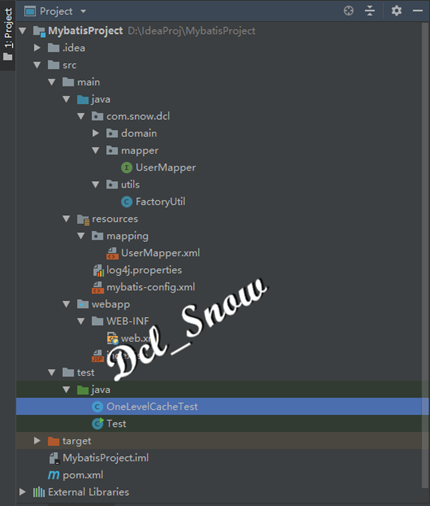
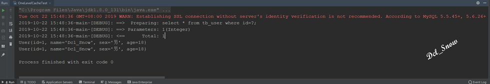
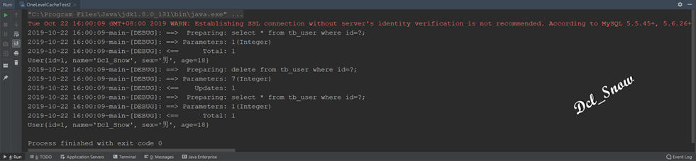
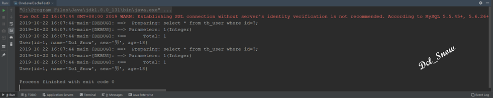
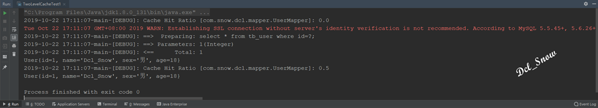

MyBatis的事物
事物的概念
在Java语言数据库框架中，数据库的事务管理都是非常重要的。
每个业务逻辑都是由一系列数据库访问完成的，这些访问可能修改多条数据记录，这一系列修改应该是一个整体，绝对不能只修改其中的某几条数据记录。
多个数据库原子访问应该被绑定成一个整体，这就是事物。事务是一步或几步操作组成的逻辑执行单元，这些基本操作作为一个整体执行单元，它们要么全部执行，要么全部取消执行，绝对不能仅仅执行一部分。
一个用户请求对应一个业务逻辑方法，一个逻辑方法往往具有逻辑上的原子性，此时应使用事物。
例如：一个转账操作，对应修改两个账户余额，这两个账户的修改要么同时生效，要么同时取消，同时生效是转账成功，同时取消是转账失败；但不可只修改其中一个账户，那将破坏数据库的完整性。
事物的四个特性
1.原子性：事物是应用中最小的执行单位，就如原子是自然界最小颗粒而不可以再分一样，事物是应用中不可再分的最小逻辑执行体。
2.一致性：事物的执行结果，必须使数据库从一种一致性状态，变为另一种一致性状态。当数据库只包含事物成功提交的结果时，数据库处于一致性状态。当系统运行发生中断，某个事物尚未完成而被迫中断，而该未完成的事物对数据库所做的修改已被写入数据库，此时，数据库处于不正确的状态。一致性是通过原子性来保证的。
3.隔离性：各个事物的执行互不干扰，任意一个事物的内部操作对其他并发的事物，都是隔离的。
4.持续性：持续性也被称为持久性，指事物一旦提交，对数据所做的任何改变都要记录到用就存储器中，通常是保存到物理数据库。
Transaction接口
对数据库事物而言，应具有：创建、提交、回滚、关闭几个动作，MyBatis的事物设计重点是org.apache.ibatis.transaction.Transaction接口，该接口源码如下：
1 public interface Transaction {
2 Connection getConnection() throws SQLException;
3
4 void commit() throws SQLException;
5
6 void rollback() throws SQLException;
7
8 void close() throws SQLException;
9
10 Integer getTimeout() throws SQLException;
11 }
12
Transaction接口有两个实现类：org.apache.ibatis.transaction.jdbc.JdbcTransaction和org.apache.ibatis.transaction.managed.ManagedTransaction。
所以MyBatis的事务管理有两种形式：
1.使用JDBC的事物管理机制，利用java.sql.Connection对象完成对事物的提交、回滚、关闭等操作。
2.使用MANAGED的事物管理机制，MyBatis自身不会去实现事务管理，而是让容器如WebLogic、JBOSS等来实现对事物的管理。
## 事物的创建和使用
在使用MyBatis的时候，会在MyBatis的配置文件mybatis-config.xml中定义，此处使用前文（https://www.jianshu.com/p/063a5ca8874c）配置信息：
1 <environment id="mysql">
2 <!--指定事务管理的类型，这里简单使用Java的JDBC的提交和回滚设置-->
3 <transactionManager type="JDBC"></transactionManager>
4 <!--dataSource 指连接源配置，POOLED是JDBC连接对象的数据源连接池的实现-->
5 <dataSource type="POOLED">
6 <property name="driver" value="com.mysql.jdbc.Driver"></property>
7 <property name="url" value="jdbc:mysql://127.0.0.1:3306/mybatis?useUnicode=true&characterEncoding=UTF-8"></property>
8 <property name="username" value="root"></property>
9 <property name="password" value="****"></property>
10 </dataSource>
11 </environment>
<environment>元素定义了连接数据库的信息，<transactionManager>子元素的type决定了使用什么类型的事物管理机制。
MyBatis的缓存
缓存的概述
在实际项目开发中，通常对数据库查询的性能要求很高，MyBatis提供了查询缓存来进行数据的缓存，以达到提高查询性能的要求。
MyBatis的查询缓存分为一级缓存和二级缓存：
1.一级缓存是SqlSession级别的缓存。
2.二级缓存是mapper级别的缓存，二级缓存是多个SqlSession共享的。
MyBatis通过缓存机制减轻数据压力，提高数据库性能。
一级缓存
在操作数据库时需要构造SqlSession对象，在对象中有一个HashMap用户缓存数据。不同的SqlSession之间的缓存数据区域（HashMap）是互相不影响的。
一级缓存的作用是SqlSession范围的，当同一个SqlSession中执行两次相同的sql语句时，第一次执行完毕会将数据库中查询的数据写到缓存（内存），第二次查询时会从缓存中获取数据，不再去底层数据库查询，提高查询效率。
注意：
若SqlSession执行了DML操作（insert、update和delete），并提交到数据库，MyBatis则会清空SqlSession中的一级缓存，目的是为了保证缓存中存储的是最新的数据，避免脏读现象。
当一个SqlSession结束后，该SqlSession中的一级缓存也就不存在了。
MyBatis默认开启一级缓存，不需要进行任何配置。
一级缓存测试
项目代码使用前文项目（https://www.jianshu.com/p/063a5ca8874c）
现在数据库的tb_user表中插入几条数据：

然后在项目的UserMapper.xml文件中添加查询和删除程序，完整程序如下：
1 <?xml version="1.0" encoding="UTF-8"?>
2 <!DOCTYPE mapper PUBLIC "-//mybatis.org//DTD Mapper 3.0//EN"
3 "http://mybatis.org/dtd/mybatis-3-mapper.dtd">
4 <mapper namespace="com.snow.dcl.mapper.UserMapper">
5 <!--插入用户数据-->
6 <insert id="saveUser" parameterType="com.snow.dcl.domain.User" useGeneratedKeys="true">
7 insert into tb_user(name,sex,age) values (#{name},#{sex},#{age});
8 </insert>
9 <!--根据id查询用户-->
10 <select id="selectUserById" parameterType="int" resultType="com.snow.dcl.domain.User">
11 select * from tb_user where id=#{id};
12 </select>
13 <!--查询所有用户-->
14 <select id="selectAllUser" resultType="com.snow.dcl.domain.User">
15 select * from tb_user;
16 </select>
17 <!--根据id删除用户-->
18 <delete id="deleteUserById" parameterType="int">
19 delete from tb_user where id=#{id};
20 </delete>
21 </mapper>
在项目的java目录右键，创建com.snow.dcl.mapper包，在该包中创建UserMapper.java接口类：

编写如下程序：
1 public interface UserMapper {
2 //根据id查询用户
3 User selectUserById(Integer id);
4 //查询所有用户
5 List<User> selectAllUser();
6 //根据id删除用户
7 void deleteUserById(Integer id);
8 }
获取mybatis-config.xml配置文件，根据配置文件创建SqlSessionFactory，获取SqlSession对象这一系列操作，每次都要使用，所以将其封装在一个类文件中，在项目java目录右键，创建com.snow.dcl.utils包，在该包下创建FactoryUtil.java类文件：

添加如下程序：
1 public class FactoryUtil {
2 private static SqlSessionFactory sqlSessionFactory = null;
3
4 static {
5 try {
6 InputStream inputStream = Resources.getResourceAsStream("mybatis-config.xml");
7 sqlSessionFactory = new SqlSessionFactoryBuilder().build(inputStream);
8 } catch (IOException e) {
9 e.printStackTrace();
10 }
11 }
12
13 public static SqlSession getSqlSession(){
14 return sqlSessionFactory.openSession();
15 }
16 }
17
在项目的test目录下的java目录下创建OneLevelCacheTest.java测试类文件：

编写如下程序：
1 public class OneLevelCacheTest {
2 public static void main(String[] args) {
3 OneLevelCacheTest oneLevelCacheTest = new OneLevelCacheTest();
4 oneLevelCacheTest.cacheOneTest();
5 }
6
7 public void cacheOneTest(){
8 SqlSession sqlSession = FactoryUtil.getSqlSession();
9 UserMapper userMapper = sqlSession.getMapper(UserMapper.class);
10 User user = userMapper.selectUserById(1);
11 System.out.println(user);
12 User anotherUser = userMapper.selectUserById(1);
13 System.out.println(anotherUser);
14 sqlSession.close();
15 }
16 }
17
执行测试程序OneLevelCacheTest1.java，可以在控制台看到打印结果：

可以看到在第一次执行查询id为1的User对象时，执行了一条select语句，第二次执行查询id为1的User对象时，没有执行select语句，因为此时一级缓存中已经缓存了id为1的User对象，MyBatis直接从缓存中将User对象取出来，并没有再次去数据库中查询。
DML操作清空缓存
在项目的test目录下的java目录创建OneLevelCacheTest2测试类文件，编写如下代码：
1 public class OneLevelCacheTest2 {
2 public static void main(String[] args) {
3 OneLevelCacheTest2 oneLevelCacheTest = new OneLevelCacheTest2();
4 oneLevelCacheTest.cacheOneTest();
5 }
6
7 public void cacheOneTest(){
8 SqlSession sqlSession = FactoryUtil.getSqlSession();
9 UserMapper userMapper = sqlSession.getMapper(UserMapper.class);
10 User user = userMapper.selectUserById(1);
11 System.out.println(user);
12 userMapper.deleteUserById(7);
13 sqlSession.commit();
14 User anotherUser = userMapper.selectUserById(1);
15 System.out.println(anotherUser);
16 sqlSession.close();
17 }
18 }
19
执行测试程序OneLevelCacheTest2.java，可以在控制台看到打印结果：

可以看到在第一次执行查询id为1的User对象时，执行了一条select语句，接下来执行了一个delete操作，MyBatis为了保证缓存中存储的是最新的数据，清空了一级缓存，所以第二次执行查询id为1的User对象时，又执行了select语句。
不同Session对象对一级缓存的影响
在项目的test目录下的java目录创建OneLevelCacheTest3测试类文件，编写如下代码：
1 public class OneLevelCacheTest3 {
2 public static void main(String[] args) {
3 OneLevelCacheTest3 oneLevelCacheTest = new OneLevelCacheTest3();
4 oneLevelCacheTest.cacheOneTest();
5 }
6
7 public void cacheOneTest(){
8 SqlSession sqlSession = FactoryUtil.getSqlSession();
9 UserMapper userMapper = sqlSession.getMapper(UserMapper.class);
10 User user = userMapper.selectUserById(1);
11 System.out.println(user);
12 sqlSession.close();
13 sqlSession = FactoryUtil.getSqlSession();
14 userMapper = sqlSession.getMapper(UserMapper.class);
15 User anotherUser = userMapper.selectUserById(1);
16 System.out.println(anotherUser);
17 sqlSession.close();
18 }
19 }
20
执行测试程序OneLevelCacheTest2.java，可以在控制台看到打印结果：

可以看到在第一次执行查询id为1的User对象时，执行了一条select语句，接下来调用了sqlSession.close()关闭了一级缓存，第二次执行查询id为1的User对象时，一级缓存是一个新的对象，缓存中没有缓存任何数据，所以再次执行了select语句。
二级缓存
使用二级缓存时，多个SqlSession使用同一个Mapper的sql语句去操作数据库，得到的数据会存在二级缓存区域，它同样是使用HashMap进行数据存储。相比一级缓存SqlSession，二级缓存的范围更大，多个SqlSession可以共用二级缓存，二级缓存是跨SqlSession的。
二级缓存是多个SqlSession共享的，其作用域是mapper的同一个namespace。不同的SqlSession两次执行相同namespace下的sql语句，且向sql中传递的参数也相同，即最终执行相同的sql语句，则第一次执行完毕会将数据库中查询的数据写入缓存，第二次查询时会从缓存中获取数据，不再去底层数据库查询，提高效率。
MyBatis默认没有开启二级缓存，需要在setting全局参数中进行配置，开启二级缓存。
二级缓存测试
在mubatis-config.xml配置文件中开启二级缓存，完整配置文件如下：
1 <configuration>
2 <!-- 指定Mybatis所用日志的具体实现 -->
3 <settings>
4 <!--开启二级缓存-->
5 <setting name="cacheEnabled" value="true"/>
6 <!--开启日志-->
7 <setting name="logImpl" value="Log4J"/>
8 </settings>
9 <!--环境配置，连接的数据库-->
10 <environments default="mysql">
11 <environment id="mysql">
12 <!--指定事务管理的类型，这里简单使用Java的JDBC的提交和回滚设置-->
13 <transactionManager type="JDBC"></transactionManager>
14 <!--dataSource 指连接源配置，POOLED是JDBC连接对象的数据源连接池的实现-->
15 <dataSource type="POOLED">
16 <property name="driver" value="com.mysql.jdbc.Driver"></property>
17 <property name="url" value="jdbc:mysql://127.0.0.1:3306/mybatis?useUnicode=true&characterEncoding=UTF-8"></property>
18 <property name="username" value="root"></property>
19 <property name="password" value="Password@123"></property>
20 </dataSource>
21 </environment>
22 </environments>
23 <mappers>
24 <!--告诉Mybatis持久化类的映射文件路径-->
25 <mapper resource="mapping/UserMapper.xml"></mapper>
26 </mappers>
27 </configuration>
cacheEnabled默认为false，设置为true表示开启二级缓存。
在UserMapper.sml文件配置缓存相关参数，完整配置文件如下：
1 <?xml version="1.0" encoding="UTF-8"?>
2 <!DOCTYPE mapper PUBLIC "-//mybatis.org//DTD Mapper 3.0//EN"
3 "http://mybatis.org/dtd/mybatis-3-mapper.dtd">
4 <mapper namespace="com.snow.dcl.mapper.UserMapper">
5 <!--开启当前mapper的namespace下的二级缓存-->
6 <cache eviction="LRU" flushInterval="20000" size="512" readOnly="true"/>
7 <!--插入用户数据-->
8 <insert id="saveUser" parameterType="com.snow.dcl.domain.User" useGeneratedKeys="true">
9 insert into tb_user(name,sex,age) values (#{name},#{sex},#{age});
10 </insert>
11 <!--根据id查询用户-->
12 <select id="selectUserById" parameterType="int" resultType="com.snow.dcl.domain.User">
13 select * from tb_user where id=#{id};
14 </select>
15 <!--查询所有用户-->
16 <select id="selectAllUser" resultType="com.snow.dcl.domain.User">
17 select * from tb_user;
18 </select>
19 <!--根据id删除用户-->
20 <delete id="deleteUserById" parameterType="int">
21 delete from tb_user where id=#{id};
22 </delete>
23 </mapper>
参数解释：
1.eviction：回收策略，默认为LRU，此外还有FIFO、SOFT、WEAK。
LRU：最近最少使用策略，移除最长时间不被使用的对象。
FIFO：先进先出策略，按对象进入缓存的顺序来移除。
SOFT：软引用策略，移除基于垃圾回收器状态和软引用规则的对象。
WEAK：弱引用策略，更积极地移除基于垃圾收集器状态和弱引用规则的对象。
2.flushInterval：刷新间隔时间，任意正整数，单位毫秒，默认情况下是没有刷新间隔，缓存仅在调用语句时刷新。
3.size：缓存数目，任意正整数，要记住缓存的对象数目与运行环境的可用内存资源数目，默认1024。
4.readOnly：只读，属性为true或false。true缓存会给所有调用者返回缓存对象的相同实例，对象不能修改，性能高。false缓存会返回缓存对象的拷贝（通过序列化），性能低，但是安全。默认为false。
注意：
使用二级缓存时，与查询结果映射的Java对象必须实现java.io.Serializable接口的序列化和反序列化操作，若存在父类，其成员都要实现序列化接口。实现该接口的原因是为了对缓存数据进行序列化和反序列化操作，因为二级缓存数据存储介质多种多样，不一定在内存，可能是硬盘或者远程服务器。
在项目的test目录下的java目录下创建TwoLevelCacheTest1.java测试类文件，编写如下代码：
1 public class TwoLevelCacheTest1 {
2 public static void main(String[] args) {
3 TwoLevelCacheTest1 twoLevelCacheTest = new TwoLevelCacheTest1();
4 twoLevelCacheTest.cacheTwoTest();
5 }
6
7 public void cacheTwoTest(){
8 SqlSession sqlSession = FactoryUtil.getSqlSession();
9 UserMapper userMapper = sqlSession.getMapper(UserMapper.class);
10 User user = userMapper.selectUserById(1);
11 System.out.println(user);
12 sqlSession.close();
13 sqlSession = FactoryUtil.getSqlSession();
14 userMapper = sqlSession.getMapper(UserMapper.class);
15 User anotherUser = userMapper.selectUserById(1);
16 System.out.println(anotherUser);
17 sqlSession.close();
18 }
19 }
20
执行测试程序TwoLevelCacheTest.java，可以在控制台看到打印结果：

可以看到在第一次执行查询id为1的User对象时，执行了一条select语句，接下来调用了sqlSession.close()关闭了一级缓存，第二次执行查询id为1的User对象时，一级缓存没有任何对象，但因为启用了二级缓存，第一次查询的数据会缓存在二级缓存中，所以显示命中二级缓存数据，不需要在执行select语句。
注意：
在UserMapper.xml文件的select语句中设置useCache='false'，可以禁用当前select语句的二级缓存，即每次都会查询数据库，默认为true，配置内容如下：
1 <?xml version="1.0" encoding="UTF-8"?>
2 <!DOCTYPE mapper PUBLIC "-//mybatis.org//DTD Mapper 3.0//EN"
3 "http://mybatis.org/dtd/mybatis-3-mapper.dtd">
4 <mapper namespace="com.snow.dcl.mapper.UserMapper">
5 <!--开启当前mapper的namespace下的二级缓存-->
6 <cache eviction="LRU" flushInterval="20000" size="512" readOnly="true"/>
7 <!--插入用户数据-->
8 <insert id="saveUser" parameterType="com.snow.dcl.domain.User" useGeneratedKeys="true">
9 insert into tb_user(name,sex,age) values (#{name},#{sex},#{age});
10 </insert>
11 <!--根据id查询用户-->
12 <select id="selectUserById" parameterType="int" resultType="com.snow.dcl.domain.User" useCache="false">
13 select * from tb_user where id=#{id};
14 </select>
15 <!--查询所有用户-->
16 <select id="selectAllUser" resultType="com.snow.dcl.domain.User">
17 select * from tb_user;
18 </select>
19 <!--根据id删除用户-->
20 <delete id="deleteUserById" parameterType="int">
21 delete from tb_user where id=#{id};
22 </delete>
23 </mapper>
{kind=link}
{kind=link}
{kind=link}
{kind=link}
{kind=link}
{kind=link}
{kind=link}
{kind=link}